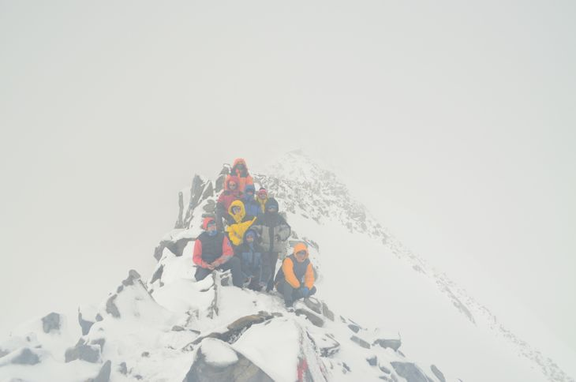
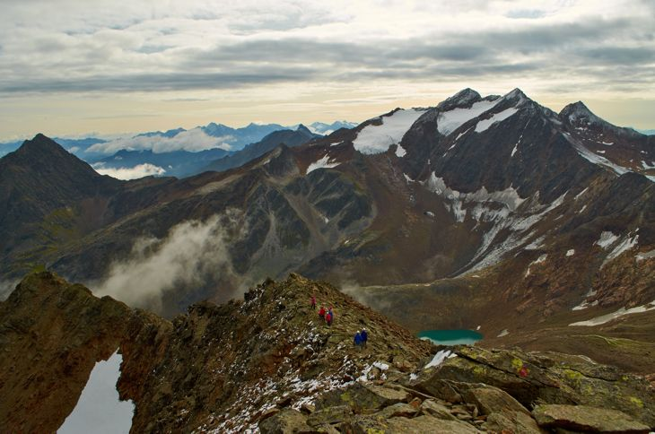

Групповое постановочное на фоне ледника Ebenferner и озера Übeltalsee
Написание походного дневника, содержащего все самые увлекательные моменты и полезную информацию для читателя-туриста, спустя месяц после собственно самого похода - это я называю мозговым штурмом под названием «вспомнить всё».
Если Вы делали заметки-пометки в преднамеренно приобретённом и выбранном из сотен других блокнотике, если записывали свои и не только свои мысли на диктофон на протяжении этой маленькой, но такой большой настоящей жизни под названием «поход», то уж справиться с оформлением электронного похода под названием «дневник» не составит Вам колоссальных затруднений. Но если история сложилась иначе, и Вы по каким-либо причинам (несомненно, уважительным) ничегошеньки не фиксировали на бумажном либо электронном носителе информации, то на момент изобретения печатного творения и обращения букв в слова, а слов в предложения жить Вам будет чуточку труднее. Главное - помнить, что Вы совершаете великое по своей значимости дело, в первую очередь значимое для ваших же товарищей, которые «мусолили» вам глаза изо дня в день на протяжении, в нашем случае, аж трёх недель! Так вот если не забывать эту правду, то можно очень даже неплохо идейно вдохновиться. Но не факт, что Вас хватит на все «-цать» дней дневника, так как вдохновение имеет нехорошее свойство улетучиваться, а человек – заканчиваться. Как остановить воздушный поток этого самого вдохновения я пока не знаю, я ещё только учусь. Однако, попробуем.
Так, для начала надо соблюсти некоторые формальности, и поведать, в какие края на этот раз нас закинуло наше групповое «хочу». После долгих скитаний по Гугл-Земле, изучений фотошедевров различных горных долин, выяснения достопримечательностей населённых пунктов, мы единодушно решили отправиться в Альпы, Штубайские Альпы. Это горный хребет, который величественно возвышается сразу в двух странах: Австрии и Италии. Высшая точка Штубайских Альп - это вершина со звучным немецким названием Цуккерхютль (Zuckerhütl) высотой 3507 метров, что если сконвертировать, то равняется, например, 1169 этажам, или чтобы лучше представлялось в голове - это 39 девятиэтажок! Вообще «Zuckerhütl» берёт своё этимологическое начало от слова «Sugarloaf», которое переводится как кусок сахара, или сахарная голова. В свою очередь, название «Sugarloaf» было придумано португальцами в XVI веке во время расцвета торговли сахарным тростником в Бразилии. Блоки сахара помещались в конические формы из глины, которые перевозились на судах. Форма, заданная этими формами, была похожа на пик, отсюда и название «Zuckerhütl». Но вы должны знать, что преодоление этой вершины не входило в наши планы. Зато ветка маршрута пролегла через другую не менее прекрасную обзорную точку горного хребта - вершину Вилдер Фрайгер (Wilder Freiger) высотой 3418 метров. Что мы узрели, оказавшись рядом с этим местом, вы узнаете позднее, и вас это точно не оставит равнодушными!
К слову сказать, длительность нашего чистого походного счастья составила ни много, ни мало 14 дней. А это значит, что вам предстоит погрузиться в атмосферу туристического бытия на целых 14 глав.
Однако, добро пожаловать!
Всё началось в тот самый день, когда на календаре было 13 августа, в десяти рюкзаках – всё личное и групповое снаряжение, в теле – ощущение чего-то крайне важно предстоящего всем нам, а в мыслях, а в мыслях – у каждого своё…
Проснулись мы в разных уголках нашего города, но воссоединились на квартире у Тани Фо, куда должна была прибыть ГАЗель, способная отвезти нас в Москву до самого аэропорта. С утра возникла суматоха, конечно, не настолько большая, чтобы перерасти в хаос, но и не настолько маленькая, чтобы нам быть абсолютно спокойными. Даже умудрились потерять Танину кошку Марусю, видимо, когда открывали-закрывали двери для нахлынувших провожающих клубней. Подождите, подождите, не переживайте - пропажу потом обнаружили и вернули в своё логово. На удивление всем нам провожающих было много до такой степени, что традиционные подарки мы открывали на протяжении всего похода чуть ли не каждый день.
Общее фото перед погрузкой в ГАЗель. Счастливы вместе.
Окончательно собравшись и распрощавшись со всеми не членами нашей группы, но членами нашего клуба, погрузились в белоснежную ГАЗель, чтобы провести там несколько часов своей жизни, направляясь в сторону великого города Москвы и приближаясь к тем самым, то есть к горам.
Итак, долго, не коротко, аж целых девять часов мы были в пути под названием «Нижний Новгород – Домодедово». Ох уж это незабываемое время, когда успеваешь поменять положение своего тела раз двадцать, когда голова несколько раз окажется там, где были ноги, а ноги там, где была голова. Не можете представить как это, а вот, оказывается, и такое бывает в жизни. Но знаете, это достаточно креативное занятие – разместиться в пределах одного сиденья (для тех, кому повезло больше – на двух сиденьях) так, чтобы руки-ноги затекали не одновременно, а хотя бы попеременно.
Приехав в аэропорт, мы, ещё прибывая в сонном состоянии своего организма после длительного переезда, высыпались из машины вместе с нашими разноцветными рюкзаками. Быстро сообразив, что к чему и почему, направились к зданию терминала, поражающее своими масштабами как минимум тех людей, которые оказались здесь в первый раз. Таких нас было немного, всего лишь трое из десяти: Аня, Таня Про и Таня Фо. Другие были уже более-менее опытными людьми в плане передвижения по этому огромному аэровокзальному комплексу и чувствовали себя, если не сказать как дома, то вполне уверенно - мол, не впервой. Надо заметить, что ожидание нашего рейса дало нам возможность в полной мере прочувствовать медлительное течение минут и осознать понятие «бесконечность». Бодрились как могли: поеданием еды, походами в «М» и «Ж» кабинки, прогулками по территории терминала. И вот уже должен был настать тот самый момент, когда объявят ту самую, долгожданную посадку на самолёт… Но если было бы всё так просто, то было бы не так интересно. Объявили вовсе не посадку, а задержку рейса, да не один раз. Тем временем спать хотелось всё больше, ждать – всё меньше. Пройдя многочисленные этапы регистрации, наша группа так-таки оказалась в салоне авиалайнера, правда, не в 23:00 как это планировалось, а в 1:00. Сам перелёт был не особо длительным - всего лишь 1,5 часа, этого оказалось недостаточно, чтобы выспаться и поэтому…
…Как только мы приземлились в Кишинёве, как только спустились по трапу на землю молдавскую и очутились в зале ожидания, сразу оккупировали десяток другой кресел и, недолго думая, погрузились в сон. Сегодня нам повезло чуточку больше, чем вчера. Рейс отправлялся ровно в то время, которое было указано на посадочных билетах – в 6:30. Пройдя очередной этап регистрации, мы расположились на борту лайнера, который держал курс на Верону. Аня, второй раз сидевшая около иллюминатора и по большому счёту первый раз в жизни летавшая на таком транспорте, была в полном восторге от увиденной многоликой земли через маленькое оконце самолёта. Вообще хочется заметить, что Аня очень мило и по-детски может восторгаться окружающим её вещам, будь то обычная упаковка от подарка, неожиданно пошедший снег в августе месяце или горная вершина. Очень хорошее качество, которое позволяет сохранять ребёнка, живущего внутри себя.
Земля в иллюминаторе видна
Италия встретила нас одурманивающей жарой, тепло чувствовалось каждой клеточкой кожи, организм попеременно требовал воды. Поэтому поводу сбросили с себя как минимум один слой одежды, и даже ненадолго показалось, что жить стало легче. Но рюкзак, потяжелевший от дополнительно впихнутых в него вещей, дал о себе знать, напоминая, кто мы есть. Было заранее решено разделиться на две группы: Паша и Илья, отобрав у начфина N сумму денег, пошли закупаться газовыми баллонами, а оставшаяся часть группы, приобретя билет на автобус, отправилась из аэро- в ЖД вокзал. Неподалёку от вокзала должен находиться продуктовый магазин, посетить который намкрайне необходимо для закупки неотъемлемой части раскладки - тушенки, паштета, колбасы, сыра, сухого молока. На поиски отправились начпрод, так как он точно знает что-то такое о еде, чего не знаем все мы, начфин, так как знаниями о еде сыт не будешь, а вот самой едой очень даже, реммастер – временно исполняющий обязанности штурмана, пока последний развлекается подсчётом количества необходимого газа, культуролог – обязанности носильщика помогающий исполнять. Заблудиться было достаточно сложно, а так как мы таких сложностей не хотели, то достаточно быстро наткнулись на «Pam» - местный известный супермаркет. Не задержавшись там надолго, решили ещё зайти в «Eurospar», где в итоге и произвели крупную закупку. К нашему всеобщему удивлению, ни тушёнки, ни паштета, ни сухого молока в магазине не было обнаружено. Что же делать? Пришлось выкручиваться методом выбора разного вида колбасы, чтобы хоть как-то разнообразить меню, и производить замену сухого молока на детскую молочную смесь, чем впоследствии были вполне довольны.
Воссоединившись всей группой на вокзале, похваставшись друг перед другом сегодняшними достижениями, пошли садиться на ЖД поезд. Нам предстояло доехать до города под названием Випитено. Ох, вот здесь-то из окна поезда кто впервые в этом походе, а кто впервые и в жизни увидел всю красоту и величественность Альп. Вид настолько завораживающий, настолько впечатляющий, что мозг просто не может сразу понять и принять всю мощь природы. Только потом приходит осознание увиденного.
Железнодорожная станция в Вероне
Из города Випитено на автобусе доехали до населенного пункта Maiern. Это был заключительный транспорт, который довёз нас до места нашей заброски. И с этого момента ноги уже могли полностью реализовывать свою основную функцию – ту, которая заложена природой, ту, о которой мы часто забываем в городе, – это ходьба. В том числе из-за неё мы все так любим туризм.
В полном составе у остановки н.п. Maiern
Начало нашего маршрута ознаменовалось пятью часами вечера. Лесная тропа была достаточно широкой и приятной для хождения. На пути нам встретился деревянный мост, мимо которого мы не могли пройти, не сфотографировавшись на нём. При этом Саше в голову пришла гениальная идея &ndash сделать фото по Мартову &ndash вид из реки на людей, стоявших на мосту. Сказано &ndash сделано. Лена и Яна быстро воодушевились такой затеей и по камням добежали до середины реки, откуда давали нам команды для построения. Только вот команды надо было не слушать, а смотреть на них, в ответ активно отвечая взмахами рук и поворотами головы. Шумная река пресекала абсолютно все попытки заговорить с фотографом и творческим художником. Но этот факт никак не смог помешать осуществить нашу задачу.
Взгляд снизу
К 19:30 мы дошли до места нашей первой стоянки, находящейся в долине Egatal на высоте 1700 метров над уровнем моря, при этом успев набрать за этот день 400 метров. Поставили палатки. Поужинали макаронами с колбасой. Все устали - двое суток перелётов-переездов дали о себе знать, и казалось, что это просто был один сплошной день переходов с одного транспорта на другой. Перед сном почистили зубы под ночным небом Альп. Красиво! Наконец-то мы в горах. Хорошо.
Проснулись в семь утра (по местному времени). Быстро пришедшее осознание того, что мы закутаны в тёплых спальниках-спарках, которые плотно прижаты друг к дружке в палатке, стоящей на поляне альпийского холма, мгновенно подняло настроение. Чтобы удостовериться в происходящем, вылезли сначала из спальников, затем из палатки. Пейзаж, тут же открывшийся нашему глазу, был поистине восхитительный: светло голубое небо с иногда проплывающими облаками стояло над холмами, которые вобрали в себя все самые приятные оттенки - здесь и фисташковый, и светло-, темно-зеленый, у основания светло-банановый, а по всей площади вкрапления цвета белого песка, создающиеся благодаря каменистому рельефу. По долине протекает чистая река Fernerbach с множественными ответвлениями, а светлый песочек и мелкие белые камешки окружают водные берега. Да, и всё-таки очень красивые здесь немецкие названия у природных объектов, звучат, знаете ли.
Долина Egatal
Чтобы не упускать такую красоту, наша оранжевая палатка решила заняться приготовлением завтрака на улице. К сожалению, синяя палатка уже начала кипятить воду внутри своего жилища, и вытащить людей наружу не представлялось никакой возможности.
Сделаю небольшое отступление от рассказа для прояснения одного момента. Всего у нас было две палатки: оранжевая – в ней жило 6 человек (руководитель, зам. руководителя, походная жена руководителя, она же начфин, а также медик всей группы, штурман и реммастер), и синяя – в ней было 4 человека (бывший зам. руководителя, а в данный момент начпрод, походный муж бывшего зама, завснар и культуролог). По такому «численно человечному» критерию у нас и назывались палатки: «шестёрка» и «четвёрка». О том, что первая была предназначена, на самом деле, всего лишь на четверых человек, а вторая – на троих, я узнала только день так, эдак на пятый похода.
Так вот от нашей «шестёрки» завтрак сегодня готовили Таня Про и Саша. Александр следил за горелкой и кастрюлей, Татьяна следила за пенкой и Александром, но при всём при этом никто не следил за Татьяной, если только горные вершины. Готовить на улице лицезрея вокруг такой удивительный пейзаж – одно удовольствие. Газ, конечно, расходуется больше, но зато душа раскрывается шире. За завтраком решили достать подарок от группы Кирилла Алексеева. На упаковке было написано: «вскрыть на завтрак 6-ого дня». Инструкцию соблюли на половину, решив пренебречь числом.
Время подарков
К 10 часам вышли на маршрут. Тропа радовала своей шириной, мы были бодры и веселы. На пути встретилась первая феррата, но для чего её тут сделали, мы так и не поняли. Не было ни одной причины, чтобы пристраховываться к ней, на том участке она выглядела даже забавно. Подъём осуществляли в таком режиме: 40 минут идём, 5-10 минут отдыхаем.
А идти ещё 40 минут…
10 минут законного отдыха
К 13 часам решили, что пора искать место для обеда - хотелось кушать. Божественный сырный суп как всегда пошёл на ура. Подкрепившись, начали собираться. Нам предстоял радиальный подъём до озера Pfurnsee. На рюкзаки надели рейнкаверы и сложили их в одно место, с собой же взяли воды, личные перекусы, средство связи.
Pfurnsee цвета изумруда никого не оставил равнодушным, в том числе и фотографа. На фотосессию на огромном камне у озера потратили аж целых 15 минут. Вечерело, необходимо было спускаться вниз к нашим брошенным рюкзакам, а жаль, не хотелось покидать на столь красивое место.
Изумрудное озеро Pfurnsee
Ура, рюкзаки на месте, можно идти дальше. А дальше - это, значит, по тропе в сторону приюта Grohmannhütte. Нет, нет, мы не собирались ночевать в нём, это лишь наш ориентир на топографической карте. Последним препятствием на сегодняшний день была феррата, на этот раз навешенная очень даже кстати. Так как наши мальчики забрали у нас рюкзаки, то для девочек спуститься по периллам не составило особого труда. Замыкающим шёл Паша. И тут-то мы воистину поразвлекались: сделали постановочное фото - девочки хватают (читайте в значении «поддерживают») Пашку за попу, пока тот спускается по феррате. Получилось смешно.
Ну чем же ещё заниматься на феррате
В 19:30 мы уже ставили лагерь на выполаживании склона – там, где нас не было видно со стороны приюта Grohmannhütte. Поужинали самой вкусной гречкой в мире. Перед сном собрались всей группой в большой палатке для обсуждения прошедшего дня, вспомнили ошибки, дабы не повторять их в будущем, и хорошие моменты, чтобы поднять общий настрой группы. Неплохая была бы традиция собираться так каждый вечер!
Утро сегодня выдалось туманное, поэтому нужно было успеть в промежуток, когда туман расходится, увидеть окружающие нас горные склоны. На этот раз все готовили внутри своих палаток.
Туманное утро
На сегодняшнем запланированном маршруте есть вероятность, что будет такая феррата, к которой необходимо страховаться карабинами, а, следовательно, без системы здесь никак не обойтись. Моя индивидуальная страховочная система не совсем была готова к такому повороту событий: у верхней обвязки не пришита стропа. Но к такому случаю готовая была я. В срочном порядке, вооружившись прочной капроновой ниткой с острой иголкой, вспомнив все наставления как нужно обращаться с трёхщелевой пряжкой, пришивая к ней стропу, совершила несколько десятков взмахов рукодельными инструментами, и а-ля, ИСС готова к любой феррате.
Вы думаете нам туда? Нет. Мы оттуда
В 10:10 наша многочисленная группа была около приюта Grohmannhütte. Для исторической справки: эта хютта была построена в 1889 году и названа в честь чешского промышленника Теодора Грохманна, который профинансировал строительство данного здания. После Первой мировой войны приют выглядел не самым лучшим образом, но его полным восстановлением занялись только в 1998-2000 годах.
Мы задержались здесь буквально на 5 минут, переговорили с местной жительницей и пошли дальше по всё той же тропе, обозначающейся как № 9. Через два часа мы были уже у Teplitzer Hütte, который в свою очередь был построен в 1898 году и перенесший последний ремонт в 1979. Мы вдвоём с Леной решили зайти внутрь, посмотреть сувениры, которые обычно продают в таких хижинах. Прошлись по длинным петляющим коридорам двух этажей, заглянули в открытые двери, после чего единогласно постановили, что здесь очень уютно. Сувениров как таковых мы не обнаружили, но зато наткнулись на wash room, что нас приятно порадовало. Впервые за всё это время увидела себя в зеркале и подумала, что очень даже неплохо выгляжу для 4 дня похода.
На веранде сидела одна семья. Яна немного поколебавшись, но всё-таки решившись, обольстительно (на сколько это было возможно в данном случае) попросила главу семейства сфотографировать всю нашу группу на фоне ледника Ebenferner. Мужчина без проблем согласился и сделал пару фотографий нам на память. Пребывание у Teplitzer Hütte в общем и целом заняло у нас порядка 40 минут.
Teplitzer Hütte
В 14 часов устроили прекрасный обед с восхитительным видом на горную долину Ridnauntal. Сегодня в меню по чёткому и продуманному плану Тани Фо стоял томатный суп с бутербродами из острейшей итальянской колбасы. А горячий каркаде насыщенно красного цвета с шоколадной конфетой был самым лучшим напитком, который только мог быть в данный момент времени. Полные сил, бодрости и энтузиазма мы продолжили свой путь всё по той же девятой тропе. Пройдя несколько сотен метров, мы вышли к такой площадке, где уже в полной мере было видно озеро Übeltalsee, которое, к слову сказать, питается исключительно ледниковой водой. На радость участникам группы здесь стояли развалины маленькой одноэтажной каменной постройки. На радость потому, что можно вскарабкаться наверх этого здания и попросить Лену сделать эффектное фото на фоне ледника, стекающего в озеро. Желающих сделать такой снимок было достаточно, да и групповую постановочную фотографию никто не отменял, поэтому около 40 минут мы провели в этом знаменательном месте.
Групповое постановочное на фоне ледника Ebenferner и озера Übeltalsee
Так как до озера было рукой подать, то спустились мы к нему за полчаса, сбросив 50 метров. При этом на пути нам встретился неглубокий ручей. Естественно пройти через него не составляло ни малейшего труда, как мальчикам, так и девочкам. Но рядом были наши мужчины, которые не дали нам ни единого шанса усомниться в том, что они самые лучшие. Каждый из них взял в охапку свою походную женщину и оперативно перенёс на другой берег. Имея сейчас прекрасную возможность писать в свободном стиле, хочу обратиться вообще ко всем мужчинам, знайте, женщине всегда и везде приятно такое обращение, как бы она не сопротивлялась при этом.
Переходим реку по всем правилам
Сегодня очень долго выбирали место для стоянки. Руководитель хотел, чтобы мы поставились на бараньих лбах с умопомрачительным видом на ледник Ebenferner. А группа посчитала, что здесь будет слишком холодно спать. Большинством голосов было решено ставить палатки чуть ниже - на сухом каменистом рельефе, не в далеке от озера. Спать легли раньше обычного, без вечерних посиделок. Каждый думал о своём.
7:30.
– Там что-то звенит!
– Там точно что-то звенит!
– К нам кто-то приближается!
Открываем палатку, выглядываем... Так это же козлы, горные козлы, на шеи у которых звонко громыхают серебряные и коричневые колокольчики. Они уже почти вплотную подошли к нашим палаткам и даже начали обнюхивать рюкзаки и пробовать на вкус ледорубы, которые остались лежать на улице, так как тамбур не резиновый и вместить всё наше добро при всём нашем желании просто не в состоянии. Лена быстро схватила фотоаппарат и как положено истинному фотографу пулей выскочила из палатки, чтобы запечатлеть сей чудесный момент. Илья также не остался безучастным, быстро оделся и наблюдал то ли за козлами, то ли за воодушевлённой Еленой, этого не могу сказать точно, так как мы остались смирно лежать в своих спальниках и контролировали процесс, внимательно слушая, что вещает фотограф. Вот Илюха, конечно, молодец, что встал и вылез из нашего логова! За что и попал в кадр вместе со жвачными парнокопытными и получил на память очень живописную фотографию, которую теперь можно отдавать на выставку в музей.
Доброе утро! А мы тут мимо проходили
Козлы достаточно долго не хотели прощаться с нами и ещё не раз приходили нас навещать. Лена потом рассказывала: «Пошла я, значит, за камень по известным делам. А тут они, идут милые, да прям на меня. Ну, я времени терять не стала, благо фотоаппарат до сих пор был со мной». Придя из похода, мы потом все дружно пересматривали получившиеся фотографии. И среди всех прочих была эта - 11 горных козлов по стойке смирно позируют перед объективом камеры. Из чего мы точно убедились, что Лена знает свое дело и умеет построить даже таких животных в процессе фотосессии.
Встреча с группой
Сегодня полуднёвка. Особо не торопимся, а значит, можно и законно порастележиваться. На завтрак кушали рисовую кашу с черносливом. Все осознали, что с утра сложно есть такие приторно-сладкие кашки, хочется чего-то солёного и перчёного.
Насытив свои желудки, три девочки из «шестёрки» решили уйти подальше от глаз соседей и устроить банные процедуры. Приготовления были долгими, но тщательными, в этом деле главное ничего не забыть, потому что занятие ответственное, потому что уходить приходиться далеко, а возвращаться «если вдруг что» не охота. Надо сказать, что баня у нас была не то чтобы горячая и не то чтобы тёплая, но такая и не ледяная. Зато, знаете ли, вид красивый - ребристое озеро Übeltalsee так и манит искупаться. Закончив этот нелёгкий процесс омовения, присоединились к другим девочкам и мальчикам, занимавшимся большой стиркой около протекающего ручья. Вот так провели всё утро в делах. А там и время обеда пришло. Стали домашний борщец варить, компот разводить, чашками, ложками громыхать. Первый раз за всё время наша «шестёрка» поела быстрее, чем «четвёрка». Даже гордость взяла за своих соседей по палатке. Кстати, за обедом выяснилось, что наш Алексей-то не приемлет яблоки в компоте, не любит то есть. Вот так вот, ходишь, ходишь с человеком в горы, живёшь в одной палатке, стукаешь по ночам - мол «пододвинься немного, а то задавишь скоро», а он на тебе - яблоки не ест. Представляете?
Ребристое озеро Übeltalsee
Благодаря тому, что поели мы быстрее, была возможность понаблюдать за процессом поедания пищи у «четвёрки» и поприставать к соседям, вдруг кто-то, например, шоколадку свою не хочет или колбаски. Но нет, что-то они все голодные видимо были и свою норму израсходовали лично на себя. За обедом с Яной вспомнили, как первый раз мы познакомились, и оказалось, что это было аж 4 года назад, когда меня в клубе ещё и в помине не существовало. Такие дела.
К 16 часам стали собирать лагерь, надо пройти десять сотен метров. Тропы как таковой на этот раз не было, шли по бараньим лбам. По пути перешли реку вброд по большим валунам, здесь ничего необычного не происходило, так что описывать особо и нечего. Сделав набор высоты в 120 метров, нашли очень хорошую площадку для стоянки, сбросили рюкзаки, и тут Лена достала свой фотоаппарат, положив начало глобальной фотосессии длиною в один час, если верить времени съёмки, указанной на снимках. Идеи для постановочных фото не кончались и не кончались, творческий процесс увлёк всех. В тот день были сделаны такие шедевры, как девчачье фото в очке, попытка мальчишеского фото в очке, групповое позёрство на фоне Ebenferner, личные открытки всё с тем же видом на ледник. Ух, хорошо поработали. Теперь можно и лагерь раскладывать, и с чистой совестью ужин готовить.
По бараньим лбам
В тот вечер ели все вместе под ночным небом Альп, было темно, но уютно. Открыли один из многочисленных и нескончаемых подарков. Если память не изменят, то там были орешки со сгущёнкой. Мои любимые! В этот же день расчехлили гитару, забрались в «шестёрку», спели несколько песен девчачьим составом. Где были мальчики в это время, не помню. Видимо, у них были свои разговоры, несомненно, важные.
Расходимся по домам, сегодня надо лечь пораньше. Завтра нам предстоит выход на ледник, не всё же фотографироваться на его фоне, пора и своими ногами его почувствовать.
Будильник прозвенел в 5 утра. Это самый ранний подъём за всё время похода. Очень тяжело вставать, но лучше это делать быстро, а то желание «оставьте меня здесь, я никуда не пойду» накроет с полной своей силой. Поэтому было принято вполне радикальное решение – зарядка на улице перед завтраком! Наша оранжевая палатка проснулась первая, и поэтому мы стали кричать «четвёртой», чтобы они выходили «гулять». Итак, с горем пополам все тела выползли в чёрную холодную темноту, освещая налобными фонариками пространство вокруг себя. Темно было настолько, что хотелось спотыкаться об каждую растяжку наших палаток. Завернувшись в бушлаты, встали в кружок… Хах, знаете, мы, наверное, были похожи на спящие комочки, которые упорно пытались разогнать сон и увеличить скорость кровообращения, дабы избавиться от умопомрачающего утреннего холода. Зарядка определённо помогла, и где-то внутри уже зародилось новое желание - жить. Разошлись по палаткам готовить кукурузный завтрак.
Время приближалось к 6:30. Чтобы выйти на ледник Ebenferner, надо предварительно сбросить 50 метров по осыпному склону, крутизна которого достигает 30 градусов. Заранее надели систему, чтобы не копошиться с ней уже на самом леднике. На голове каска, в руках ледоруб. Идём шаг за шагом, внимательно и осторожно переставляя треки на подвижном рельефе. Сейчас лучше двигаться медленно, но уверенно: левая нога заносится, чтобы опуститься на более-менее устойчивый камень, правая рука упирается на ледоруб, сосредоточенный взгляд устремлён только вниз, перед собой, иногда успеваешь посмотреть как там дела у других - все идут, хорошо. Может быть, мне одной показалось будто бы прошлая целая вечность под названием «подвижная осыпь», но то, что все выдохнули только когда спустились вниз и сошли с осыпи на ледник - это однозначно.
Шаг за шагом по осыпному склону
И вот он - внушительный Ebenferner, правда, уже порядком растаявший к 7 часам утра. Цвет снега далёк от белоснежного. Он серый, грязно-серый, что было немного неожиданно для меня, человека, первый раз в жизни ступившего на горное оледенение. В голове разом развеялось сложившиеся до этого момента представление рафинированного снежного покрова земли в горах. Успокаиваю себя тем, что существует ещё множество прекрасных чисто-белых ледников, которые нам ещё непременно предстоит увидеть, но только не в этом походе, видимо. А Ebenferner таким и останется в памяти: немного угрюмый и туманный, но первый!
Время надевать альпинистские кошки. Сбросили рюкзаки, уселись на них и начали обуваться. И тут понеслась: у кого-то кошки ещё не отрегулированы, у кого-то спадают с носка… Эх, кто ж так в походы ходит! Но ничего, пособирались, перекусили и в новой обувке ступили на новый для нас рельеф. «А как же вставание в связки?» - спросите вы. Идём в одиночном режиме, пока открытый ледник это позволяет. Но блаженствовали мы недолго, примерно через час начали «делить верёвки», вязать восьмёрки, муфтовать карабины. Теперь идём в два раза медленнее, зато рюкзаки легкие, как те самые пушинки.
Прошло полчаса, а потом ещё столько же, впереди туман, сзади туман. Что делать – шагаем дальше. На выполаживании склона решаем сделать обеденный перерыв, чтобы и подкрепиться, и сил заодно набраться. Просто так на леднике не начнёшь готовить, необходимо палатки ставить. Справившись с постановкой временного жилища, повара залезли внутрь, чтобы приступить к своим прямым обязанностям. Надо сказать, что сидеть внутри палатки, поставленной на леднике, очень весело. То правая попа, то левая нога провалится в ямку, и ты понимаешь: ага, вот здесь в трещине льда ручеек протекает, и лучше бы перекатиться на левую попу или правую ногу. Зато тарелки удобно расставлять вдоль такой траншеи, стоят, падать им некуда. Поели горячего лапшичного супчика, согрелись. Пора и честь знать, рюкзаки собирать.
Пока стояли на обеде, мимо нас прошёл один стильный немец, направлявшийся в сторону Becherhaus. Он, настоятельно порекомендовав нам не делать ночёвки на леднике, пошёл дальше своим путём… Вот зачем люди в одиночку ходят в горы? Ради чего? Никогда этого не понимала, и понимать отказываюсь. Что с ними не так? Но в прочем это уже совсем другая история…
Добавляем красок в угрюмый Ebenferner
Итак, идём дальше в связке вдоль восточной границы открыто-закрытого ледника. Цель - выйти на скальный участок для постановки лагеря. Если немного разбавить текст цифровыми данными, то вы узнаете, что за сегодняшний ходовой день мы набрали 500 метров с дистанцией 2,6 км, беря в расчёт ветку маршрута, проходящую непосредственно по леднику Ebenferner.
В 15 часов дня по местному времени наша группа в полном своём составе развернула крупномасштабную операцию под названием «фундамент для палатки», или «перестрой гору». И хоть строительству нас никто не учил, к делу подошли вполне основательно и серьёзно. Выравнивание площадки было чем-то похоже на головоломку «тетрис»: сюда нужен камень маленький округлый, рядом с ним местечко уже для треугольного чуть побольше, а вон в том углу поместится крупный прямоугольный, чтобы сразу закрыть перепад высот. Главное – по максимуму избавиться от выпирающих острых камней, дабы снизить до минимума возможность быть промассажированным ночью в самых неожиданных местах своего тела. Увлечены были все, без исключения, впрочем, и утомлены тоже.
Фундамент не хотите ли?
Забившись по своим палаткам, занялись домашним бытом. Надо заметить, что «шестёрка» на протяжении всего похода весьма отличалась от «четвёрки»: оранжевая палатка – это шум, гам и веселье, синяя палатка - это уют и спокойствие. Разобравшись со всеми делами, от чего-то стало немного грустно, и я решила сходить в гости к «четвёрке» после ужина. Находясь в их домике, сразу же ощущаешь неимоверную атмосферу теплоты. Так и в этот раз: угостили шоколадом, налили чай в кружку и даже немного на меня, это чтобы точно стало теплее)) Скоротав у «четвёрочки» четверть часа, в ответ я позвала их всех к нам, чтобы болтать о том о сём и есть сладкие подарки. Оранжевая палатка с трудом выдержала нашествия такого количества людей, а люди, в свою очередь, с трудом укомплектовались поверх пенок и спальников: одни руки были параллельны чужим ногам, другие ноги были перпендикулярны чьим-то рукам, а кто-то, поддерживая хаос происходящего, вообще растянулся по диагонали. Так и лежали в тесноте, но зато все вместе. Расходиться было тоже не просто: во-первых надо найти ноги (желательно свои), находящиеся в противоположной стороне палатки относительно головы, затем вытащить их из-под соседа, ну и в конце, промяв всем кости, выйти на улицу.
Пора укладываться спать, устали сегодня. Завтра снова вставать спозаранку.
19 августа. Я думаю, этот день все запомнят надолго. И делая ретроспективу нашего похода по Штубайским Альпам, в первую очередь в памяти проносится именно этот отрезок жизни.
Встали рано, так как запланирован большой и сложный маршрут: восхождение на вершину Signalgipfel (3393 м), радиальный подъём на соседнюю вершину - Wilder Freiger (3418 м), спуск вниз через перевал Seescharte к озеру Grünausee.
Сегодня с утра после плотного завтрака, выйдя из палатки, можно было увидеть то, что вчера скрывал плотный туман - панораму ледника Ebenferner со всеми опоясывающими его хребтами и вершинами. Красота! Собрав всё групповое и личное снаряжение, приготовившись к преодолению виа-феррат, отправляемся на хорошо продуманный маршрут.
Панорама ледника Ebenferner
Сначала проходим несколько метров по всё тому же леднику и приближаемся к гребню вершины Signalgipfel. Но вновь наплывший туман скрывает от нас полную картину окружающего нас вида. Благо у нас есть штурман, который никогда в жизни и не при каких условиях не даст заблудиться группе (даже если этого захочет сама группа). Он всех ведёт за собой, ориентируясь по красным меткам, нанесённым на камни. Участок рельефа не самый комфортный для прохождения, и порой ноги, не выдерживая напряжения, съезжают по скользким валунам, перекладывая ответственность с себя на большие ягодичные мышцы. Чуть издалека завидев феррату, ободрились и воспряли духом, ведь благодаря этой металлической конструкции можно увереннее и с большей скоростью пройти скальный участок. Кроме того, это прекрасная возможность поработать с карабинами в реальных условиях.
Двигаемся друг за дружкой, не забывая поднимать голову и иногда смотреть по сторонам, где во всей красе изредка открывается Ebenferner. Уже потом, по прошествии дня, мы поняли, что если бы не густой туман, накрывающий всё вокруг, было бы гораздо страшнее идти вдоль острого гребня, по сторонам от которого крутые обрывы до самого ледника. Так большое скопление воды в воздухе помогло сохранить нормальную деятельность нервной системы, по крайней мере, женской половины группы.
Ну и пусть, что опасный гребень. Если фотографируют, надо улыбаться
К полудню мы были на высоте 3393 метра. Немного погуляв по вершине, решили спуститься чуть ниже – на выполаживание, чтобы сделать обеденный перерыв. Взору предстал знакомый для нас рельеф, который предполагал выкладывание камней. Особо не углубляясь в перфекционизм - мы же здесь ненадолго, обустроили две площадки под палатки. Но пообедав, поняли, что зря мы поступились перфекционизмом. Пошёл снег! Видимость плохая, от слова совсем. По спутниковому передатчику запросили информацию по погоде у нашего диспетчера. Впрочем, прогноз был вполне очевиден – покорение Wilder Freiger откладывается на неопределённое время.
Повторив вчерашний подвиг, снова забрались всей группой в одну палатку. Так ведь гораздо приятнее и веселее пережидать непогоду, особенно когда гитара находится в руках у нужных людей. Лежим плотнячком, в чём были, не снимая страховочных систем, но уже и не надеясь, что они нам сегодня ещё пригодятся. Но сейчас лучше не двигаться, а просто слушать песни.
Прошло несколько часов. Погода явно не хочет нас пускать на соседнюю вершину. Так и провели половину дня в ожидании и полурастележивании. В шесть вечера мы резко вспомнили, что наша оранжевая палатка поставлена не самым лучшим способом, и было бы хорошо переложить фундамент, сделав его более ровным. Подумали и решили, что пора заняться этим полезным делом, пока нас окончательно не занёс снег. Вышли на улицу, а тааааам… Ох, вот в зимнем походе было теплее, чем здесь и сейчас в августе месяце. Жизнь нас явно к такому не готовила. Поддавшись внезапно напавшему на всех веселью, начали активно разводить деятельность с «перестановкой дома», что на фотографиях вышло крайне забавно: несколько человек приподнимают палатку, вокруг оживлённо носится Влад, желая то ли помочь, то ли просто побегать, а рядом, наблюдая за разворачивающимися событиями, стоит Паша с недоумевающим видом: «нет, нет, я не с ними, не понимаю, что здесь вообще происходит». Повеселившись от души, заползли во вновь поставленную палатку. А чтобы скорее согреться, начали кипятить воду для ужина.
Перестановка по фен-шую
Так вмиг изменившаяся погода сорвала все наши грандиозные планы. И мы прошли 500 метров, вместо запланированных 5 километров. Случай, надо сказать, не уникальный, такое часто бывает в горах. Ложимся спать в надежде, что завтра улучшится видимость и можно будет продолжить свой ход. Кстати, вот так встретила нас Австрия - одна из самых гостеприимных и приветливых стран Европы.
Проснулись между шестью и семью часами утра. Первая мысль, которая посетила руководителя, это посмотреть, что же там творится за пределами уютной палатки. Открыли «дверь», выглянули наружу и были ошеломлены увиденным: как будто кто-то постелил белое пушистое покрывало, а в воздухе повесил тюль, которая, на самом деле, была ничем иным как настоящей метелью. Фотограф-Лена не осталась равнодушной к такому подарку природы и, быстро накутавшись в пуховку, выбежала на улицу, чтобы запечатлеть сей чудесный момент. Те кадры, что она сделала в это январское утро, поистине великолепны: на переднем плане представлены ледорубы, превратившиеся в единую снежную статую, а чуть поодаль, но также крупным планом, оранжевая палатка, покрытая узором из заиндевевших снежинок.
"Зима. Ты сегодня так рано
Разбудила наш маленький дом"
Конечно же, в такую погоду все нормальные люди сидят дома. А мы очень даже нормальные, поэтому не просто остались сидеть, но и продолжили лежать, получше завернувшись в спальники. Метель, попутавшая времена года, не унималась ни на миг. Тем самым давая десяти туристам, уставшим после трудного ходового дня, возможность насладиться сном. Проснувшись через два часа, решили приготовить завтрак, на случай если вдруг улучшиться видимость горизонта и надо будет в срочном порядке выходить на маршрут. Но чуда не произошло ни через два, ни через три, ни даже через четыре часа. Погода изменилась ровно настолько, чтобы дать нам шанс недалеко прогуляться от бивуака.
К одиннадцати дня мы выбрались из палаток и решили снова подняться на вершину. Помните, я ещё в начале всего рассказа говорила о том, что вы не останетесь равнодушными, когда узнаете, что же мы лицезрели с высоты 3418 метров. Так вот, пришло время разоблачить интригу. На Wilder Freiger мы так и не попали! А находясь на 25 метров ниже данной точки, то есть на вершине Signalgipfe, мы провели время в ожидании – туман не торопился расходиться и только на несколько секунд приоткрывал небольшое окно с видом на ледник. Пока стояли на хребте, мимо нас прошло человек шесть-семь. Оказалось, что это очень популярное место. Сделав несколько фотографий в стиле «здесь могли бы быть твои горы», стали спускаться вниз к своим покинутым палаткам.

Здесь могли бы быть твои горы. На вершине Signalgipfel
Хотелось бы поведать ещё об одном интересном факте. Данный район оказался чрезмерно оживлённым, то есть многолюдным, что в корне отразилось на поиске укромного места для важных дел. Только, казалось бы, найдёшь подходящий камень, только устроишься, как на тебе - надвигается человек и прямо в твою сторону. Что делать - приходится искать новое убежище. Все наши потом жаловались друг дружке: «Ушли в горы подальше от людей, чтобы не видеть никого, а тут, здрасьте, пожалуйста! Никакой личной жизни!».
К 15 часам дня погода чуть прояснилась, и мы, не упуская хорошего момента, стремительно начали собирать вещи, чтобы сбросить несколько сотен метров вниз, иначе в этом «туманном Альбионе» можно надолго застрять.
Спуск предполагал использование всего нашего снаряжения. Даже пришлось вспомнить движение в три такта: жуткое положение тела, когда находишься лицом к склону, а за спиной у тебя бездна, в которую надо спускаться в строго ритмичном режиме. Большую часть пути проходили в связках. Самое удивительное, что в этот раз первой шла Аня. Как ей удавалось находить дорогу, я до сих пор ума не приложу. Но двигалась она с такой скоростью, что половине группе постоянно приходилось её догонять. Вот такие вот у нас мощные женщины. В общем и целом нам понадобилось около трёх часов, чтобы сбросить 420 метров.
Женщину вперёд!
Сегодня на маршруте обнаружили очень интересную вещь – замотанный металлический трос и груду анкеров, сложенных среди камней. Мы, удивившись такому феномену, назвали эту картину «феррата – собери сам». Было забавно.
Однако, уже вечерело. Подойдя к выполаживанию под вершиной Gamsspitzel, начали искать место для палаток. Мы были безумно рады, что ушли с последней точки нашей стоянки, буквально «сделали ноги» с того места. И даже очередное выкладывание фундамента не смогло нас огорчить.
Сегодня мы уходили в туман, чтобы достичь ясности. А знаете, в жизни вообще часто приходится так делать…
Ранний подъём в 5:30. Сегодня первое ясное утро за последние три дня. Мы так долго находились в молочной дымке, что уже одно только появление яркого солнышка из-за горизонта являлось чудесным событием. Рассвет сегодня прекрасен: жёлтый диск озаряет своими лучами вершины хребтов и проплывающие внизу нас слоисто-кучевые облака. Завораживающая картина! Поэтому сразу после завтрака девчонки пошли фотографироваться на фоне долины Langental.
Больше, чем просто рассвет
Достаточно неспешно собрали лагерь за два часа после пробуждения, выходим на маршрут. Первый этап – это радиальный подъём на вершину Gamsspitzel. Рюкзаки оставили спрятанными под каменными стенами хребта, взяв с собой ледорубы в качестве треккинговых палок. Особых трудностей восхождение по скально-осыпному склону ни у кого не вызвало, и уже минут через 20 мы были на высоте 3050 метров. Отсюда открывается потрясающая панорама долины Langental. Здесь собрано сразу несколько достопримечательных мест: белоснежный ледник Grüblferner с множеством продольных и поперечных трещин, хребет, являющийся границей между Италией и Австрией, а также небольшое изумрудное озеро Fernerseen, расположившееся в ледниковом цирке. Впитав в себя всю эту красоту, начинаем спускаться к нашим рюкзакам.

Панорама долины Langental. Люди в горах
Преодолев перевал Seescharte, направляемся в сторону Sulzenauhütte по узкой серпантинной тропе. Идём медленно и осторожно, так как градус наклона в некоторых участках достигает 45 градусов. Передние большеберцовые мышцы напряжены по максимуму, необходим привал. С седловины спустились к месту жительства горных баранов, сделав остановку недалеко от них. Произведя несколько вдохов и выдохов, съев все лакомства из перекуса, надеваем на плечи рюкзаки, чтобы подойти поближе к озеру Grunausee. Через 15 минут мы были на травянистой площадке, где очень хорошо бы устроить обед. Что мы немедленно и сделали. Двухчасовой перерыв вернул нам силы, домашний томатный суп и компот из сухофруктов утолили голод и жажду, а вкусные подарки в очередной раз подняли нам настроение.
Обеденный перерыв с видом на озеро Grünausee
Целый час мы спускались от озера Grünausee до обзорной площадки, где обустроена специальная лавочка, с которой хорошо видна Sulzenauhütte с её окрестностями. Нам как раз в ту сторону. Сидим, смотрим, наслаждаемся, представляем, сколько километров ещё предстоит сегодня двигать землю своими ногами.
Окрестности Sulzenauhutte
Знаете, нельзя просто так взять и пройти мимо хютты, если в вашей группе есть как минимум один человек, страстно собирающий наклейки или открытки из каждого путешествия. Сувенирная лавка, находящаяся внутри здания, сразу же притянула к себе Елену, а за ней и других участников группы. Руководитель же определённо точно считает, что коллекционирование подобных безделушек – это то, чем не должен заниматься настоящий турист. Ну, не знаем, многие не согласны. Поэтому Александру остаётся только терпеть и ждать, когда группа в полной мере насладиться закупкой сувениров.
Надо идти дальше, нам ещё предстоит набрать 100 метров. Смотря по сторонам, наблюдаем необычную картину: обломки труб и пластика валяются в реке и рядом с ней, разрушен мост, который должен был проходить через Sulzenaubach. Хм, странно это всё… Чуть дальше переходим разлившуюся змеевидную реку в брод. Руководитель, в свою очередь, не упуская прекрасной возможности, снова устроил целое представление по преодолению водного потока. Молодец, всех развеселил, делая различные па при переправе через реку.
А как вы обычно переходите брод?
Осталось совсем немного – дойти до Blaue Lacke, которое скрывается за мелко каменистой возвышенностью. И вот оно – спокойное, чуть ребристое озеро. За сегодня мы преодолели дистанцию в шесть с лишнем километров. Время 17:30, ещё светло, можно не торопясь ставить лагерь. Уходим в бытовые дела. Ужинать решили все вместе на улице, а то что-то мы всё врозь, давно так не собирались вечером. С чаем уплели подарочную шоколадную пасту Nutella. Уже не помню, о чём говорили, но помню, что было тепло и уютно.
Бытовуха на озере Blaue Lacke
Ещё долго не ложились спать. То одна, то другая мужская фигура промелькнёт в темноте, либо у озера стоят две девчонки, шушукаются. Много мыслей уже накопилось за этот поход, надо поделиться с кем-то, обсудить. А тёмная ночь - это как раз лучшее время, чтобы поговорить обо всём.
Начало сегодняшнего дня было жуткое. Я проснулась с настоящим чувством страха. Итак, представьте: темнота, с улицы доносятся басовитые мужские голоса, раздаются звуки лязгающих предметов. Первая мысль: какие-то иностранцы подошли к озеру, ходят вокруг наших палаток и разбирают наши ледорубы, которые как обычно остались лежать вне тамбура. Мы встревожены не на шутку. Саша немедля расстёгивает молнию палатки, чтобы увидеть истинную картину происходящего. Почти тут же и закрывает её. «Ну что там?!». «Да двое каких-то мужиков у озера», - очень лаконично и без подробностей объяснил руковод. Но тут же добавил: «Надо собираться и уходить». Окей. Без особых обсуждений, мы оделись, вытащили все вещи из палатки и минут за 20 собрали лагерь. Это было самое молниеносное снятие бивуака. Вот всегда бы так быстро работали! Через какое-то время двое иностранцев разложили огромные полотна не понятно чего на берегу озера, подошли к нам и со славами "ничего не трогайте здесь, пожалуйста", ушли в неизвестном направлении. Наверное, они пришли из хютты Sulzenau и проводят здесь какие-то неведомые нам исследования. Всё же от греха подальше мы решили уйти с этой стоянки и позавтракать в более спокойном месте.
Завораживающая панорама при экстренных сборах в 6 утра
Обогнув холм, спустились к той же реке, что переходили вчера. Мальчики вновь отважно перенесли своих девочек через ледяной Sulzenaubach. Солнце уже встало и вовсю пытается согреть нас своими огромными лучами. Ищем красивое местечко, где бы можно приготовить пищу. Пройдя несколько метров, нашли очень хорошую травянистую полянку. Снимаем рюкзаки, расстилаем пенки, зажигаем горелки. Ох, так приятно готовить на улице, когда уже проснулся аппетит и совершенно не хочется спать. А тут ещё и красоту такую показывают.
"Над нами солнце светит - не жизнь, а благодать"
Время 9 часов, пора продолжать маршрут. Дорога приятная, идём по тропе, крутизна которой в среднем 20°-25°. Набрав сотню метров, подходим к озеру, находящемуся прямо под самым ледником Sulzenau.
Когда мы делали привал у ледникового озера, я даже не подозревала, что он может плавно перейти в обед, растянувшись на четыре часа. Так получилось по причине того, что путь на запланированный Sulzenauferner был обрезан. Готовясь к походу ещё в городе, нами был внимательно изучен маршрут: в данном месте мы должны были выйти по тропе, пролегающей по склону хребту, к самому леднику. Дорожка хороша была видна в приложении Google Earth, да и фотографии этой местности имелись. Но на самом деле всё оказалось не так. Тропа, которая единственная могла вывести к леднику, обвалилась из-за схода камней по склону хребта. Запасной выход пролегал через перевал Beiljoch (Peiljoch). Мужчины, очень долго и тщательно исследуя местность, всё-таки пришли к выводу, что у нас только один вариант - идти по запасному пути.
Обеденный перерыв устроили напротив Sulzenauferner. Сидим, прогреваемся солнышком. Сегодня был, пожалуй, самый вкусный обед из всех, что был когда-либо. Суп из чечевицы вприкуску с острой итальянской колбасой – ну просто пальчики оближешь. А потом ещё и компот с молочными вафлями, плюс сладкий подарок. Сегодня разошлись не на шутку – вскрыли сразу три подарка! Очень уж хотелось чего-то съедобного, но в первых двух были настольная игра и кроссворды-судоку. Так и открывали гостинцы, пока не наткнулись на конфеты в любопытной обёртке с рисунком игральных карт.
Кстати говоря, журнал с кроссвордами оказался очень занимательным. Саша прочитал нам все самые важные анонсы "Моей прекрасной дачи": "Второе дыхание огуречника", "Как вырастить богатырскую капусту?" и так далее и тому подобное. Смеялись очень долго.
Неожиданно неприступный Sulzenauferner
Всё, пора выходить, а то что-то засиделись. Идём по набитой тропе на приступ скально-осыпного склона крутизной до 45°. Поднимаемся на перевал Beiljoch без какого-либо снаряжения, здесь в нём нет необходимости. Оказавшись на высоте 2672 метра, мы наблюдали следующую картину: множество туров – искусственных сооружений в виде груды камней - расставлено по всему периметру перевальной площадки. Сколько их тут? Ну, точно не меньше 40! Это целый город туров.
На перевале Beiljoch. Что-то из вечного…
Западный склон хребта очень кстати защищён ферратой. Двигаясь траверсом, постепенно сбрасываем метры. На выполаживании склона пересеклись с красавцем-австрийцем по имени Тобиас. Он шёл один с небольшим рюкзаком за спиной, держа в руках длинные треккинговые палки. Так как мужчина оказался крайне разговорчивым, улыбчивым и вообще безумно харизматичным, то общаться с ним было одно удовольствие. Такое чувство как будто он сошёл с экрана телевизора, такой, знаете, голливудский актёр с белоснежной улыбкой. Тобиас держал путь в Иннсбрук. А наш маршрут, между прочим, заканчивается именно в этом городе. Так что обменялись контактами, телефонами, а вдруг ещё придётся увидеться, всякое бывает. Сохраняя улыбку на лице, разошлись в разные стороны.
Развеселившиеся появлением иностранца
Внизу виднеется горнолыжная станция, что нас сразу натолкнуло на раздумья, где устроить сегодня ночёвку. Решив, не спускаться слишком близко к людям, остановились на выполаживании под вершиной Grosser Trögler. Многие сильно разочарованы тем, что на 10 из 14 походных дней мы оказались в таком шумном месте, вид на проезжающие фуникулёры не радовал совсем.
Время пять вечера. До заката ещё долго, так что можно, например, приготовить долгожданные и всеми любимые перженники. Пока Влад месил тесто, мы, собравшись всей группой, устроили разбор полётов и серьёзную дискуссию, после которой все крепко задумались, если не на всю жизнь, то, по крайней мере, на ближайшие дни.
Ночное австрийское небо постепенно накрыло своим покрывалом. Участники не спали. Каждый проводил свой анализ. Анализ чего? Похода, своих действий, в конце концов, жизни. Между прочим, очень полезное занятие.
Сегодня в нашей оранжевой палатке удивительное событие: завтрак готовят Илья и Лена. Вот это да! Просто этим делом большую часть похода занимались Саша и Таня Про, тщетно пытаясь разбудить других ребят. Но этим утром «в прямом эфире» была Елена Селиванова. О, если эта женщина просыпается и начинает что-то делать, то все её действия непременно сопровождаются комментариями и мини-историями из жизни. Так что ни у кого не остаётся шанса поспать хоть ещё чуть-чуть, пока готовится завтрак.
Итак, съев вкуснейшие макарошки с сыром – каждый бы день так питалась, начали собирать вещи, чтобы спрятать их в рюкзаки, а рюкзаки спрятать за камни. Можно начинать радиальный выход на вершину Grosser Trögler – весьма популярную из-за близкого расположения к хютте Dresdner и имеющую прекрасную обзорную точку на самую высокую вершину Штубайских Альп – Zuckerhütl. На себя надели каски, взяли пуховки на случай, если ветер захочет нас сдуть с высоты 2920 метров, и ледорубы, чтобы зарубаться, тьфу, чтобы опираться, конечно же. Путь был не близкий – 520 метров набора, или 1,34 километра дистанции. Но мы же сильные, мы всё преодолели. Время 9:15. Забравшись на вершину, увидели ещё группы туристов. Люди, снова люди… Да, здесь действительно есть на что посмотреть, не зря сюда ходят толпы туристов. Очень, очень красиво! Впервые по-настоящему захватывает дух. Даже ничего не буду описывать, это надо прочувствовать и увидеть самому, и картинки тут не помогут, и не надейтесь. На юге расположился мощный ледник Sulzenauferner со «сладкой» вершиной в центре. На деревянном кресте приколочен металлический ящичек, в котором хранятся два блокнота. Мы вписали и свои имена после десятков других, так сказать, запечатлели себя в истории. Ещё немного и ветер нас точно сдует с этой могучей вершины, не смотря на то, что мы в пуховках. Спускаемся вниз гораздо быстрее, чем поднимались. С трудом нашли свои рюкзаки - очень хорошо спрятали даже от самих себя. Немного обождав, решили приготовить обед, чтобы потом сразу же можно было выдвигаться на маршрут, не останавливаясь на длительную остановку, так как планировался длительный переход через хютту и расположенную рядом с ней горнолыжную станцию. Я думаю, уже не стоит говорить, что обед был восхитительным, это и так понятно. Если в вашей группе начпрод от Бога, то каждый приём пищи – это целая церемония.

На вершине Grosser Trögler
Как бодрость духа? Готовы идти? Да? Так почему же ещё сидим? Быстрее выйдем, быстрее встанем. К 14 часам дня мы подошли к Dresdner Hütte. Это современная хижина для альпинистов и лыжников. Сюда заезжают целыми семьями, даже не знаю кого здесь больше – взрослых людей или детишек. Не упустив возможности зайти внутрь, закупились сувенирами, в основном открытками. В 15:20 были уже у крохотного озера под названием Egessensee. Вот и пришли, собственно. Всё оставшееся время до отбоя в нашем полном распоряжении. Для начала сделали постановочное фото у озера в стиле "чайный сервиз", всё как "любит" Сергей Евгеньевич. Угомонившись, разошлись гулять по свету, точнее по окраинам данной местности. Здесь тихо и спокойно, есть возможность уединиться или поговорить с кем-нибудь по душам.
А-ля "чайный сервиз"
Тихий вечер плавно перешёл в вечер песен. Он был душевным и настоящим, таким, какой и должен быть. Конечно, кто-то скажет, бывает и лучше. Но знаете, лучшее - враг хорошего. А в тот вечер нам было хорошо. Сидели на разложенных пенках, закутавшись в пуховки, достав из закромов все свои накопившиеся за поход перекусы. И песенник тоже пригодился, не зря Ленка впопыхах печатала его ещё в городе. Было холодно, но расходиться не хотелось. Но всегда наступает такой момент, когда хочешь, не хочешь, а надо. У нас ведь даже палатки ещё не расставлены, а уже начинает темнеть, между прочим. По большому счету, да и Бог с этими палатками, что мы в темноте с фонариками не справились бы? Не в первой чей. Но люди действительно стали сильно мёрзнуть, а этого допускать никак нельзя.
После ужина стояли на улице, смотрели на звёздное небо. Чувствовали себя частью вечности.
Сегодня очень насыщенный день. Скорее хочется рассказать, почему же так называется эта глава. Но давайте обо всём по порядку.
Встали около шести часов утра. Солнышко постепенно начинает разогревать наши озябшие тела. Затолкав в себя приторно сладкую кашу, готовимся к радиальному выходу с места ночёвки. На вершину Egessengrat идём в одних рубашках, жара. Набор высоты небольшой, так что быстро проскочив по тропе скально-осыпного склона, оказываемся на высоте 2631 метр. Отсюда можно увидеть озеро Mutterberger See. Оно кажется недосягаемым, и от этого ещё более манящим.
На площадке нашим завснаром был обнаружен бесхозно лежащий огромный металлический знак. И естественно, Павел не смог остаться равнодушным к такому примечательному инвентарю. Это же целое поле для фантазий постановочных фотографий! Лена только успевала нажимать на кнопку спуска затвора фотоаппарата.
Паша что-то разбушевался
Спустившись к нашим в который раз покинутым рюкзакам (и как они прощают это нам?), присели на дорожку, перекусили солёной рыбкой и пошли дальше крутить землю своими ногами…
Путь к Mutterberger See пролегает через гравийную дорогу, которая имеет достаточно острый градус наклона. Колени безумно напрягаются при таком спуске. Так что, например, Алексей, выбрав наиболее комфортный вариант, начал траверсировать склон, смягчая каждый удар от столкновения подошвы треккинговых ботинок с землёй. Идём все вместе, болтая о какой-то занимательной ерунде.
В 12:30 начали искать подходящее местечко для обеденного перерыва. Сегодня рано встали, поэтому уже вполне проголодались. Уже отлаженная система, гораздо ускоряет процесс приготовления пищи. Всего несколько минут - и мы все сидим с тарелкой горячего супа в руках. Подкрепившись, накидываем рюкзаки на плечи и продолжаем свой прерванный ход. Ещё немного, ещё чуть-чуть и мы будем около озера потрясающей красоты, если, конечно, верить картинке на открытке, которую я купила в хютте Dresdner.
Собственно к 16 часам вечера мы достигли этого уникального места. И оставив все вещи на берегу озера, пошли восторгаться окружающими видами. Однозначно решено, что жизненно необходимо устроить здесь днёвку.
Водная гладь
Пока "Эльбрус" (Селиванова и Брусова) был поглощен процессом фотосессии, мы стояли возле камня и вели разговоры о бытие. В этот момент было такое чувство, что нам уже совершенно некуда торопиться и можно спокойно в полной мере наслаждаться жизнью. Но как только мы включили размеренное существование, погода решила нас растормошить. Всё началось с небольшого дождика. Мы экстренно стали переносить вещи и расставлять палатки. Однако дождь тоже стал усиливаться, давая нам понять, что мы медленно двигаемся, что надо оперативнее разбираться с вещами и прятаться по домам. Буквально за несколько секунд погода раскапризничалась ещё больше, преподнеся нам подарок в виде снегопада и града. Так мы залезли в палатки уже достаточно сильно промокшие. Лежим на пенках в противно сырой одежде, ждём, что же будет дальше. А дальше – больше! Плюс ко всему над нами со всей силой разверзся гром. Но нас это нисколько не напугало, а даже наоборот раззадорило. Находясь в весёлом расположении духа, мы с девочками начали визжать на каждый удар грома. А если большая концентрация женщин в одном месте решила покричать, то будьте уверены, что делать они это будут качественно и с полной самоотдачей. Даже не знаю, что было сильнее – раскаты грома или наши голосовые связки. В конце концов, всё это погодное шоу представление закончилось тем, что нашу палатку начало подтапливать, и надо было искать другое место. Буквально через полчаса погода утихомирилась, но только не женщины… От женской половины из "четвёрки" поступило крайне оригинальное предложение: почему бы сейчас не искупаться, благо озеро совсем рядом, далеко ходить не надо. Недолго думая, большая часть группы согласилась на такие водные "процедуры". Сказать, что было холодно, ничего не сказать. Но если делать всё правильно и по технике, то очень даже приятно бодрит. А залезать потом в тёплую палатку - одно удовольствие.
Вот такой сегодня выдался вечер. Так что если вам не хватает острых ощущений, то непременно сходите в поход с нашими женщинами. Им точно что-нибудь да взбредёт в голову.
25 августа – заключительный полноценный день в горах. Сегодня в нашем распоряжении целая днёвка, чтобы попрощаться с Альпами.
Время 7:30. Оранжевая палатка встала быстрее синей. Не спать же до обеда, когда надо успеть запомнить каждую минуту своего пребывания в этом уникальном месте. Устроившись поудобнее на пенках, разложив рядышком всю кухонную утварь, поставили на горелку кастрюлю с водой. Пока закипает содержимое, можно посмотреть в безграничную даль, подумать о вечном… А вот и пузырьки уже пошли, можно убавлять газ и засыпать макароны. У нас ещё осталась горчица, которая придаёт пикантный вкус любому блюду. Ох, и гурманами же мы стали за этот поход. Совсем разбаловала нас Татьяна.
За завтраком наблюдаем за горными овечками, которые, также как и мы, уплетают за обе щеки, но только не рожки, а зелёную травку. Интересно, для них трава - это деликатес или же овсянка – вроде бы и не очень-то хочется, а съесть надо.
Завтракаем все вместе
По случаю днёвки устраиваем банный день и большую стирку. Для такого случая даже заранее нагрели на солнце воду в двухлитровых бутылках. Но какое же мытьё без ныряния. Почти всем составом расположились на берегу озера, собрались с духом и… на старт, внимание, марш! Наши крики были слышны во всей округе. Иностранные туристы, которые ненадолго остановились на противоположном берегу, наверное, до этого дня не знали, что такое можно вытворять на горном озере. Сделали троекратный заход, перед каждым разом набираясь всё больше смелости и отваги. Все счастливы как дети.
Пока девочки стирали накопившуюся грязную одежду, мальчики готовили суп. После обеда чуть было не стали разлагаться, но от общегруппового сна спасла идея создания постановочных фотографий в озере Mutterberger See. Все сразу же оживились. Саша и Лена продумали общую концепцию картины, оставалось приготовить реквизит и моделей к съёмкам. Работа была очень слаженной, имелись даже личный костюмер, человек-пуховка, в обязанности которого входило согревать полураздетых актёров, вовремя подавая куртки, а также прочие помощники на площадке. За этот вечер сделали больше сотни снимков! Все остались довольны самим процессом фотосессии.
Под руководством режиссёра-постановщика
В завершении этого прекрасного вечера небо нам подарило необыкновенного цвета закат. Ещё долго бродили в ночных сумерках. Хочется очень многое сказать этим горам. Очень многое!
Спокойной всем ночи!
Сегодня проснулись очень рано, так как надо успеть за день добраться до населённого пункта к остановке Grawa Alm. Необходимо пройти всего лишь 6,5 километров с условием постоянного сброса высоты. Не вопрос.
Готовим пищу уже совсем не экономя газ в баллонах. Что сегодня на завтрак? Да, да, Александр, снова сладкая каша, рисовая приторно-сладкая каша. Ну, вы держитесь! Вот горчица вам в помощь!
Собираем рюкзаки под пристальным наблюдением овец, но как будто бы уже не тех, что приходили к нам вчера. И да действительно, через пару минут за животными следуют двое пастухов. Очень колоритные мужчины в шляпах и жилетках с маленьким багажом на плечах. Попытались с ними заговорить, но, не поняв друг друга, разошлись. Точнее они пошли дальше своей дорогой, а мы остались снимать лагерь.
Горные овечки – белые туристы
Как только все пожитки были собраны, Лена Селиванова поднялась на высокий камень, с которого начала не только вещать, но и показывать в прямом эфире. Сегодня это была зарядка с элементами рукопашного боя. Очень оригинально!
Взбодрились, рюкзак на плечи и пошли…
Идём по хорошо набитой тропке. Пейзаж медленно и плавно начал сменяться с камней на траву, затем на кустарники, а потом и вовсе постоянно стали мелькать деревья. Ох, как же мы давно не видели густой растительности, непривычно это. Но глаз только радуется такой смене панорамы.
Через 4 часа, сбросив около 900 метров, мы были вблизи водопада Grawa. А здесь уже, конечно, водятся толпы туристов, от мала до велика. Вот мы и в зоне доступа. Заключительное групповое фото на фоне Grawa Wasserfall. Основная часть похода подошла к своему логическому завершению. Осталось дождаться автобуса, который довезёт нас до самого центра Иннсбрука.
Ну а пятидневное проживание / выживание в Европе - это уже совсем другая не менее длинная история…
Grawa Wasserfall